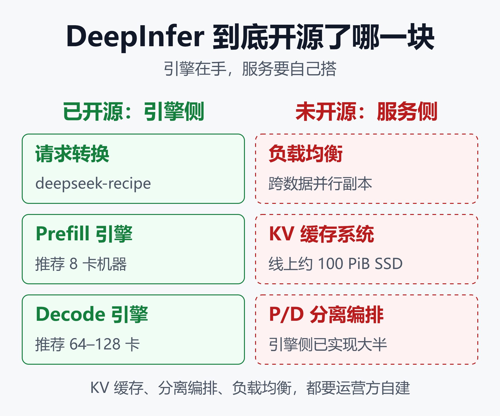
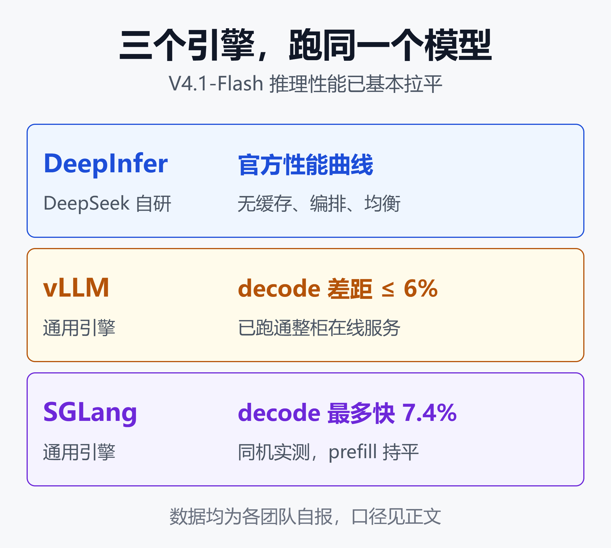

DeepInfer 开源了，普通团队能用上什么：硬件门槛、缺失组件与替代路线
10 月 20 日，DeepSeek 把线上服务实际在用的推理引擎 DeepInfer 放上了 GitHub，许可证是 Apache 2.0。随之披露的数字很醒目：单集群每天处理 155 万亿 token，输入缓存命中率 96%，闲时每张加速卡每小时带来 38 美元收入。
这些数字来自 DeepSeek 自报，未经第三方审计。
仓库的 README 同时写明了三件事：只支持一个模型，只认两类最新的加速卡，而且完整推理服务所需的 KV 缓存系统、分离编排和负载均衡，都不在这次发布里。
不到一周，vLLM 和 SGLang 先后按 DeepInfer 的测试口径交出对标结果，性能基本追平，部分测试点小幅领先。
所以对普通团队来说，问题已经从“DeepInfer 能不能跑”变成“这次开源之后，手里多了哪些选择”。本文按这个顺序梳理：引擎规格、硬件门槛、缺失的组件、两大开源框架的对标、自建成本账，以及四条现实路线。
一、DeepInfer 是什么
DeepInfer 是一个把模型权重变成在线服务的推理引擎。它负责内核优化、并行策略、调度和采样，不负责训练，也不改变模型本身的能力。
据 README，这次发布的核心信息如下。
| 项目 | 规格 |
|---|---|
| 引擎许可 | Apache 2.0 |
| 支持模型 | 仅 V4.1-Flash |
| 默认权重 | V4.1-Flash-1017 |
| 权重许可 | MIT |
| 加速卡 | SM100、昇腾 950 |
| 系统环境 | Linux，GCC 13+ |
| Python 版本 | 3.12 |
| 运行时 | CUDA 13 或 CANN 9.2 |
引擎内置的能力包括：
- DeepSeek 自家的 FlashMLA、DeepGEMM、DeepEP 等内核库。
- 注意力数据并行、MoE 专家并行和专家负载均衡（EPLB）。
- DSpark 自适应投机解码，以及 SWA Bounded Replay。
- 异步调度，让 CPU 准备下一步的同时加速卡不空转。
- 批次不变推理、确定性采样（仅 NVIDIA 路径）。
- 按正则、JSON Schema 或 EBNF 约束输出。
README 的致谢写明，DeepInfer 最初主要在 vLLM 基础上构建，同时借鉴了 SGLang 和 TensorRT-LLM。
V4.1-Flash 的参数规模，各来源口径不一：模型卡写 763B，另有分析按 MoE 专家部分称 552B，输入和输出阶段分别激活约 8B 和 16B 参数。“激活参数少”只节省算力，权重仍然要整体放进显存。
同时发布的 deepseek-recipe 是另一个组件，MIT 许可，负责把 Messages、Chat Completions、Responses 三种请求格式转成模型 prompt，再把输出解析回 API 响应。
二、第一道门槛：硬件只认两类
DeepInfer 的硬件支持只有两行：NVIDIA SM100 GPU 和华为昇腾 950 NPU。
SM100 对应 B200、GB200 这一代 Blackwell 卡。在 SGLang 的对标中，DeepInfer 在 B300 和 GB300 上也已跑通。H100、H200 这类 Hopper 卡不在支持列表里，消费级显卡和 Mac 同样不在。
后文涉及的 vLLM、SGLang 对标也全部在 Blackwell 上完成，Hopper 上的表现暂无公开数据。
昇腾 950 被列入支持范围，但目前没有公开的 DeepInfer 实测。社区分析按已披露的 decode 数据推算：131K 上下文、每用户 100 tok/s 约束下，GB200 单卡约 2.55 万 tok/s，昇腾 950DT 约 5000 tok/s。这是跨来源推算，不是同口径实测。
租一张卡要多少钱
Silicon Data 的租赁指数显示，2026 年 10 月 10 日 B200 均价每卡每小时 5.93 美元，B300 为 6.71 美元。按需价区间更宽，B200 从约 4 美元到 14 美元以上，AWS 和 Oracle 只卖 8 卡整机。
整柜租用更贵。GB200 NVL72（72 卡）的报价折合每卡每小时 10.5 到 27 美元。后文估算统一取这些指数价，属于低位假设。
三、第二道门槛：开源的是引擎，不是服务
README 在功能列表之后单列了一段，标明完整推理服务还需要、但本次发布不包含的三项：
- KV 缓存系统。
- 视觉编码、Prefill、Decode 的分离编排（引擎侧大部分功能已实现）。
- 数据并行副本之间的负载均衡，Prefill 和 Decode 都包括在内。

这张图的结论是：引擎、请求转换层已经拿到手，缓存、负载均衡和分离编排要运营方自己搭。
缓存为什么是关键
DeepSeek 线上的缓存方案规模不小。据其部署说明的整理：
- 持久化 KV 放在独立的 3FS 存储集群，容量约 100 PiB SSD。
- 保留期是 Agent 流量 3 天、聊天流量 7 天。
- 推荐的存储服务器配 20 块 30.73 TB 硬盘，读取不低于 40 GB/s，写入不低于 5 GB/s。
- 任意 Prefill 节点都能从共享存储取回前缀，缓存位置和算力位置解耦。
96% 的输入缓存命中率就是靠这套系统撑起来的。
缓存的价值直接体现在 API 价格上：缓存命中的输入每百万 token 0.003 美元，未命中 0.15 美元，相差 50 倍。没有缓存系统，每个请求都要为完整提示词付费，Agent 场景尤其吃亏。
据 DeepSeek 披露，缓存管理和负载均衡仍与内部基础设施耦合，因此暂未完整开源。
规模：官方推荐 128 卡
官方部署建议里，Prefill 用普通的 8 卡机器，Decode 用 64 到 128 卡的超节点，靠大规模专家并行摊薄 MoE 的权重开销。按推荐布局，最小的高效部署单元是 64 卡 Prefill 加 64 卡 Decode。
README 的性能图也在这个量级下测得：4 张 SM100 做 Prefill，64 张做 Decode。这是 DeepSeek 为自家流量设计的布局，并不是跑通这个模型的下限，下一节的对标给出了小得多的配置。
四、开源一周：vLLM 和 SGLang 交了什么作业
DeepInfer 公布的测试脚本和性能曲线，给了通用框架一个明确的对标基线。vLLM 和 SGLang 都直接按它的口径做了复现。

这张图的结论是：DeepInfer 提供了参照基线，vLLM 的 decode 差距在 6% 以内，SGLang 同机实测 decode 最多快 7.4%，prefill 基本持平。
vLLM：追平之后，跑通整柜在线服务
10 月 23 日，vLLM 团队与 Inferact 发布了 V4.1-Flash 的大规模服务报告。要点如下：
- Decode：GB200 上，131K 上下文、每步 3 个草稿 token，batch 8 到 256 的吞吐与 DeepInfer 公布结果相差都在 6% 以内。
- Prefill：用 2 张 GB300 跑出的曲线能跟上 DeepInfer 公布的曲线。两边配置不同，vLLM 明确表示不把差距当作引擎快慢。
- 整柜服务：在一个 GB300 NVL72 机柜上，配合 P/D 分离和大规模专家并行，AgentX 测试中每卡 95.4 万 tok/s（含缓存输入），P90 每用户 196 tok/s，是其单节点结果的 7.9 倍。
- 低延迟：4 张 B300、TP4 的专用解码路径，单用户 P90 达到 826 tok/s。
按 DeepSeek 闲时价格折算，这套整柜配置相当于每卡每小时 38.96 美元，与 DeepSeek 自报的 38 美元基本吻合。
需要注意，DeepInfer 一侧的数字是从 README 图表上读出的，并非两边在同一台机器上对跑。
vLLM 还在报告里给出了几条对模型的判断，对自建团队很有参考价值：
- 全局 KV 每个 token 只占 890 字节，KV 容量很少成为 batch 的瓶颈。上下文从 128K 加到 855K，decode 只慢约 7%。
- Prefill 适合小规模并行。DEP4 的每卡吞吐只有 DEP2 的 83%，主要损失来自数据并行不均衡。
- Decode 的瓶颈在 MoE，大规模专家并行有效。开启 EPLB 后，专家均衡度从 0.35 提升到 0.94。
- 规模到整柜时，CPU 开销变成关键。未优化的 DEP32 反而比 DEP16 慢。
报告也说明了两者的关系：DeepInfer 源自 vLLM，vLLM 也一直在集成 DeepSeek 开源的内核。这次更像双向流动，而不是谁替代谁。
SGLang：同一台机器，两个引擎都跑
10 月 24 日，SGLang 发布的对标走得更直接：在同一台 B300 或同一个 GB300 节点上，SGLang 和 DeepInfer 都实际跑了一遍，测试参数照搬 DeepInfer 的脚本。
Prefill 用 4 张卡，每个测试点 DeepInfer 取四种配置里最快的一种：
| 机器 | SGLang 相对 DeepInfer |
|---|---|
| B300 | 慢 0.3% 到快 3.9% |
| GB300 | 慢 0.6% 到快 3.9% |
Decode 用 16 个 GB300 节点共 64 张卡：
| 每卡请求数 | DeepInfer 每步 | SGLang 每步 |
|---|---|---|
| 8 | 9.37 ms | 9.41 ms |
| 64 | 13.27 ms | 12.64 ms |
| 256 | 31.19 ms | 28.88 ms |
低负载时两者持平，每卡 256 个请求时 SGLang 每步短约 7.4%。SGLang 还用 GSM8K 做了精度检查，得分 97.5%。
这组数据有几处口径差异，读的时候要带上：
- 两边都强制专家路由均衡，没有开启 EPLB，和真实流量不同。
- SGLang 的投机接受率按 3.25 模拟，DeepInfer 用的是真实接受率。
- SGLang 把 Engram 表放在显存，DeepInfer 默认放主机内存。
- DeepInfer 的草稿模型带 64 个冗余专家，SGLang 没有这个选项。
SGLang 的依赖清单里直接列入了 deepseek-recipe 0.2.0，以及打包后的 FlashMLA、DeepGEMM 内核。DeepInfer 开源的组件，已经进入了通用框架的主线。
DeepInfer 自己的数据也要分条件看
DeepSeek 公布了 DSpark 动态验证与固定验证 5 个 token 的对比估算：每个并行单元（rank）16 个序列时慢约 1.5%，60 个时快 5.4%，96 个时快 11.0%。
调度优化在高并发下有收益，低并发下可能反而更慢。上线前应该用自己的并发量实测。DSpark 的原理可以参考 DSpark 提速 85%、DFlash 加速 6x——推理加速两大技术路线怎么选？。
以上对标数据都由各团队自行发布，未经第三方复现。更准确的说法是：在 DeepInfer 的测试口径下，两大通用框架已经追平，部分测试点小幅领先。
五、成本账：从 128 卡降到 4 卡
对标带来的最大变化，是部署规模的下限。按前文的租金指数，每月 720 小时粗算：
| 部署形态 | 卡数 | 每月租金 |
|---|---|---|
| 官方推荐布局 | 128 张 B200 | 约 55 万美元 |
| vLLM 整柜服务 | 72 张 | 54 万至 140 万 |
| vLLM 低延迟 | 4 张 B300 | 约 1.9 万美元 |
整柜一行按 GB200 NVL72 报价折算，GB300 整柜通常更贵。以上只算卡的租金，不含存储、网络、CPU 服务器和工程人力。
4 卡配置是 vLLM 在 AgentX 真实会话上跑出的低延迟服务，说明小规模部署已经可行。它在高并发下能撑多大吞吐，报告没有给出可以直接引用的数字，需要自己实测。
每百万输出 token 的成本
DeepInfer 的 Decode 图给出了 64 卡下的两个工作点（数字为图上读数）：
| 工作点 | 单卡产出 | 每百万输出成本 |
|---|---|---|
| 低延迟 | 约 2600 tok/s | 约 0.63 美元 |
| 高吞吐 | 约 2.6 万 tok/s | 约 0.06 美元 |
低延迟点每用户约 325 tok/s，高吞吐点每用户约 103 tok/s，两者不能拼成“又快又便宜”。成本按 B200 每卡每小时 5.93 美元、满载运行计算：
每百万输出成本 = 每卡每小时租金 × 1,000,000
÷ （单卡 tok/s × 3600）
图中吞吐按 75% 投机接受率折算，上下文 131K，只算 Decode。
和 API 对比
官方 API 的价格是每百万 token（美元）：
| 类型 | 闲时 | 高峰 |
|---|---|---|
| 输入（缓存命中） | 0.003 | 0.006 |
| 输入（未命中） | 0.15 | 0.30 |
| 输出 | 0.60 | 1.20 |
高峰时段为周一至周五 UTC 01:00–04:00 和 06:00–10:00（中国法定假日除外），其余为闲时。价格以官方页面为准。
用这个价格算两个持平点，只拿闲时输出价对比，口径已经偏向自建：
- 4 张 B300 每天租金约 644 美元，要每天稳定产出约 10.7 亿输出 token 才能持平，相当于 4 张卡合计持续约 1.24 万 tok/s。
- 64 卡 Decode 每天租金约 9100 美元，持平点约为每天 150 亿输出 token。
日调用量明显低于这些量级的团队，自建没有成本优势。自建的理由更多是数据不出域、合规或定制需求。
38 美元不是利润
“闲时每卡每小时收入 38 美元”被不少人换算成 80% 以上的推理毛利。需要注意：
- 38 美元是收入，不是利润，DeepSeek 没有披露对应哪种卡。vLLM 的 38.96 美元同样是按 DeepSeek 价格折算的收入当量。
- 社区按每卡每小时 5 到 10 美元成本推算，仅加速卡层面的毛利在 74% 到 87% 之间。
- 这些估算没有计入 SSD 缓存集群、CPU、网络、闲置容量、故障和人力。
- 155 万亿 token 里绝大部分是缓存命中的输入，不能当作新生成的 token。
DeepSeek 自己也说，线上系统大约只达到理想离线基准的 80%。
六、普通团队的四条现实路线
路线一：直接调官方 API
官方 API 的 deepseek-flash 背后跑的就是这套生产栈，调用代码不需要改动。
模型效果方面，Arena 评测显示 V4.1 Flash 20261017 Max 在 Agent Arena 和 Code Arena WebDev 中均为开源第一，Agent Arena 总榜第 11，中位任务成本 0.20 美元。该数据经 Latent Space 整理，来自评测方自述。
适合大多数团队，尤其是日输出量明显低于上面持平点的场景。
路线二：直接用 vLLM 或 SGLang 私有化部署
原本“等通用框架吸收 DeepInfer 优化”的路线，现在已经不用等了。两家框架在 DeepInfer 的口径下已经追平，而且自带 DeepInfer 没有开源的服务层：vLLM 已经用 P/D 分离、大规模专家并行和负载均衡跑通了整柜在线服务。
对需要私有化部署的团队，这是比 DeepInfer 本体更现实的选择：
- 有 4 张 B300 级别的卡，可以从 vLLM 的 TP4 低延迟配置起步。
- 有整柜资源，可以参考 vLLM 的 P/D 分离和大规模专家并行方案。
- 上线前用自己的流量实测吞吐、首字延迟和精度。
硬件门槛仍然在：几份对标都在 Blackwell 上完成。昇腾侧，上一代 V4-Flash 已有 W8A8 量化的 vLLM-Ascend 部署教程，以及面向昇腾 A2 的单机、双机和 P/D 分离方案，但它们对应的不是 V4.1-Flash。
框架选型可以参考 大模型推理框架选型2026：vLLM、SGLang、TensorRT-LLM、Ollama、Xinference五大框架怎么选。
路线三：单独用 deepseek-recipe
如果在别的引擎上服务 V4.1-Flash，deepseek-recipe 是现成的格式对照物，可以检查 prompt 拼装和输出解析是否与官方一致。SGLang 已经把它列入依赖。
python3 -m pip install deepseek-recipe
它的 README 明确了边界：模型推理、工具执行和 HTTP 传输都由调用方负责。它会区分真正的控制 token 和用户文本中长得一样的字符串，但这不等于完整的 prompt 注入防护。
路线四：把工程思路搬进自己的系统
DeepSeek 和 vLLM 披露的几项做法与硬件无关，小团队也可以借鉴：
- 前缀稳定。系统提示和工具列表放在最前面，变化的内容放在最后，才能吃到缓存。
- 按计算量而非请求长度调度 Prefill。DeepSeek 按估算的注意力计算成本分配任务。
- Prefill 用小规模并行。vLLM 的数据显示，并行规模越大，数据并行不均衡带来的损失越大。
- Decode 路由看负载。DeepSeek 同时看并发请求数和累计 KV 长度；vLLM 认为 V4.1-Flash 的步时对上下文不敏感，按请求数挑最空的副本就够。
- 缓存和算力解耦。前缀放在共享存储里，任意 Prefill 节点都能取用。
另一个值得关注的点是可复现性。DeepInfer 的批次不变推理和确定性采样都只在 NVIDIA 路径可用，开启确定性采样需要关闭变长 MTP 并固定随机种子，也就是用 DSpark 的速度换稳定输出。评测分数随批次组成漂移的团队，可以从这里理解问题来源。
七、谁现在该上手
| 团队类型 | 建议 |
|---|---|
| 日调用量不大 | 直接调 API |
| 要私有化部署 | 用 vLLM 或 SGLang |
| 自有大规模集群 | 对比评估 DeepInfer |
| 云厂商、托管商 | 重点研究 |
DeepInfer 本体更适合已经有大规模 Blackwell 或昇腾 950 集群、具备推理工程团队和存储运维能力的机构。对其他团队，DeepInfer 的价值主要通过 vLLM、SGLang 和 API 间接到手。
有一个合规背景需要留意。据 dev.to 转述 The Next Web 和 Trending Topics 的报道，发布前一天美国国土安全部下令联邦文职机构移除 DeepSeek 产品，范围包括基于其模型的第三方工具。Apache 2.0 许可不能回答这个问题，涉及美国联邦业务的团队，应在部署前请法务审阅。这不构成法律意见。
小结
DeepInfer 的价值要分三层看。
作为代码，它的门槛很高：只支持 V4.1-Flash，只认 Blackwell 和昇腾 950，按官方布局要 128 张卡，还缺缓存、分离编排和负载均衡。
作为基线，它让通用框架有了明确的追赶目标。一周之内，vLLM 和 SGLang 在它的口径下追平，并补上了它没给的服务层，部署下限从 128 卡降到了 4 卡。
作为信息，它公开了一套生产级推理系统的设计取舍，不需要同样的硬件也能读懂、借鉴。
对大多数团队，结论很直接：小规模用官方 API；要私有化，就在 Blackwell 卡上用 vLLM 或 SGLang；同时把前缀缓存和调度思路用到自己的系统里。
免责声明
本文基于公开资料整理，不构成投资、采购或法律建议。文中的性能和成本数字为厂商或框架团队自报、图表读数或示意估算，租金按 2026 年 10 月的公开报价取值，实际价格和效果以自测为准。
参考来源
- DeepSeek 官方仓库 —— deepseek-ai/DeepInfer README
- vLLM 官方博客 —— Serving DeepSeek-V4.1-Flash at Scale: vLLM Matches DeepInfer and Scales to GB300 NVL72
- SGLang Gist —— DeepSeek-V4.1-Flash on SGLang at DeepInfer's benchmark settings
- 量子位 —— DeepSeek开源真香！vLLM/SGLang连夜性能反超
- DEV Community —— DeepSeek Open-Sourced the Engine Behind Its API. It Ships Without a KV Cache System
- Kingy AI —— DeepInfer Explained: DeepSeek's Open Inference Engine, Benchmarks, Specs, and Costs
- Latent Space AINews —— DeepSeek DeepInfer: Open Source SOTA Inference
- The Next Web —— DeepSeek open-sources DeepInfer, the engine that runs its AI models
- IntuitionLabs —— NVIDIA H100 Price 2026: H200/B200/B300 租赁指数
- IntuitionLabs —— Data Center GPU Pricing 2026: The Full AI Pricing Index
- Beam —— NVIDIA B200 Pricing
- 博客园 —— DeepSeek-V4-Flash W8A8 MTP 昇腾 NPU vLLM 部署教程
- GitCode Ascend-SACT —— DeepSeek-V4-Flash-A2 昇腾 A2 部署项目